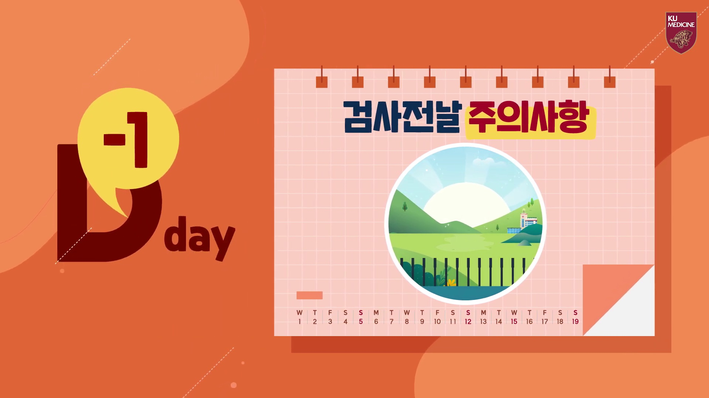
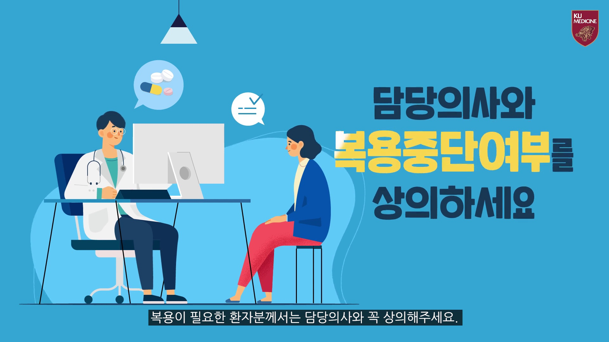
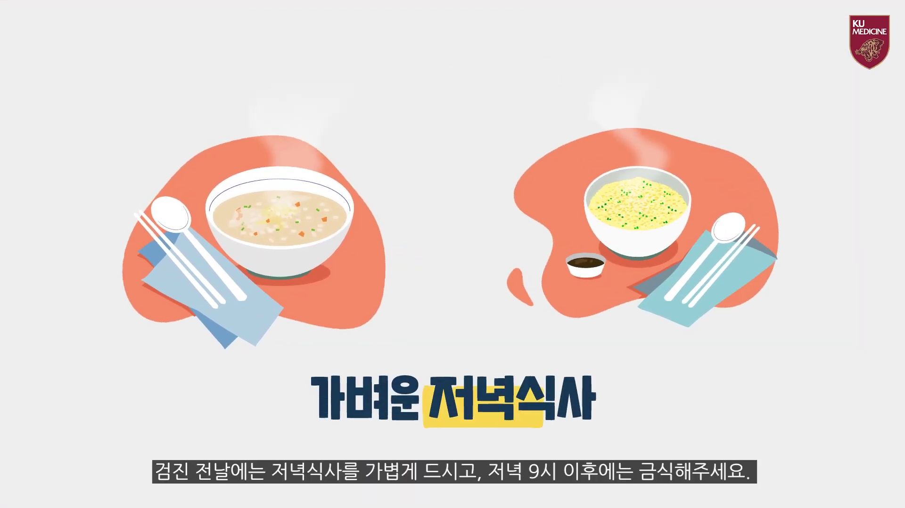
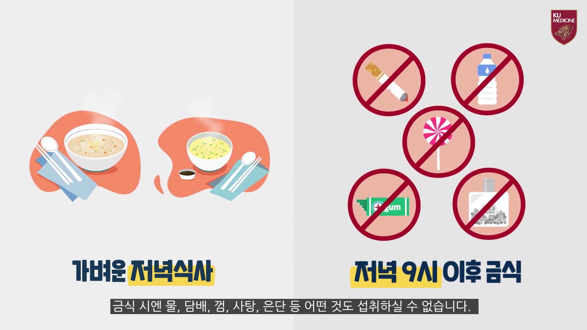
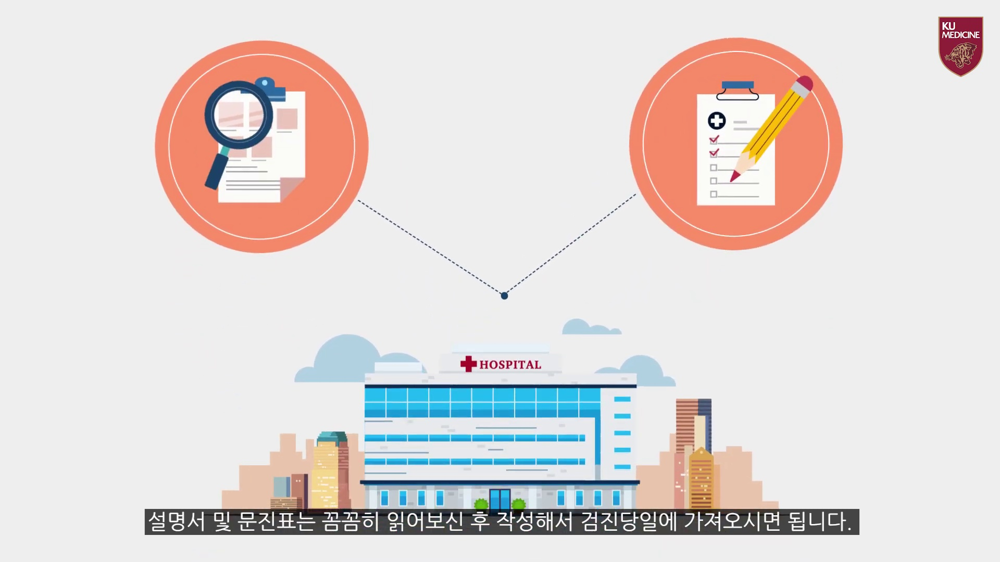
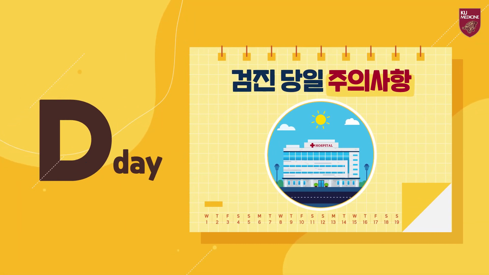

1
검진 전날 주의사항
전날 준비 구간이 시작된다는 것을 큰 제목으로 먼저 보여줍니다.

고려대학교병원 건강증진센터 공식 영상의 16:9 장면을 자르지 않고 그대로 배치했습니다.
전날 준비 구간이 시작된다는 것을 큰 제목으로 먼저 보여줍니다.

임의로 약을 끊지 말고 복용 중단 여부를 담당 의료진과 먼저 확인합니다.

기름진 식사보다 가벼운 저녁식사를 선택하는 장면입니다.

물·담배·껌·사탕·은단까지 피해야 할 항목이 자막과 함께 온전히 보입니다.

전날 미리 읽고 작성해 당일 가져가야 할 준비물을 보여줍니다.

전날 준비 뒤 당일 확인으로 넘어가는 구간을 명확히 나눕니다.
